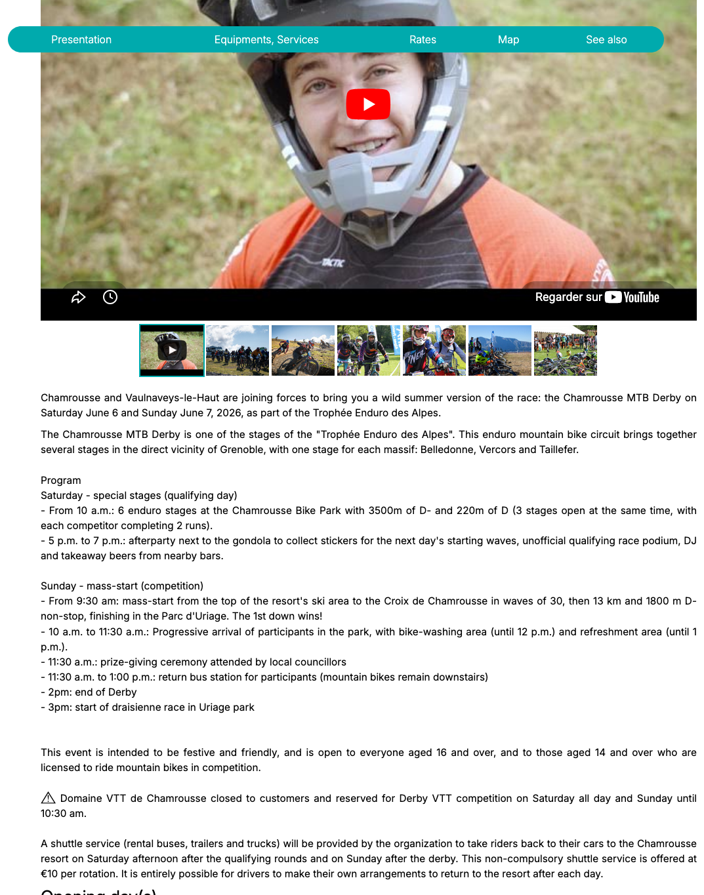
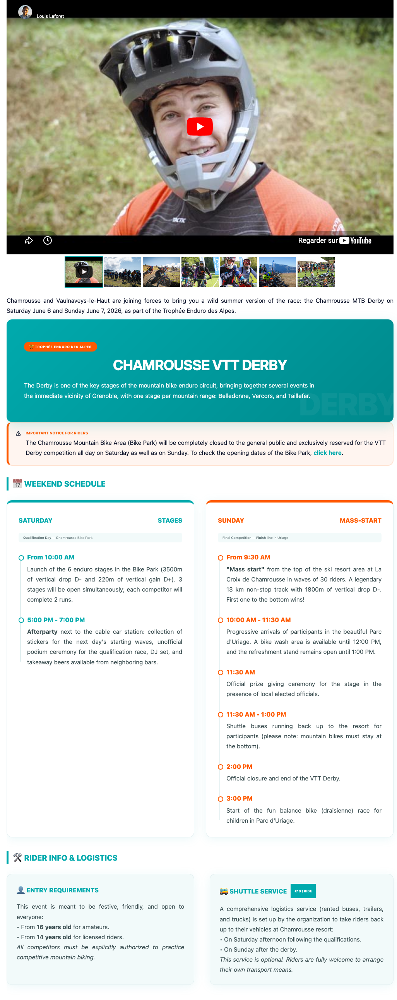
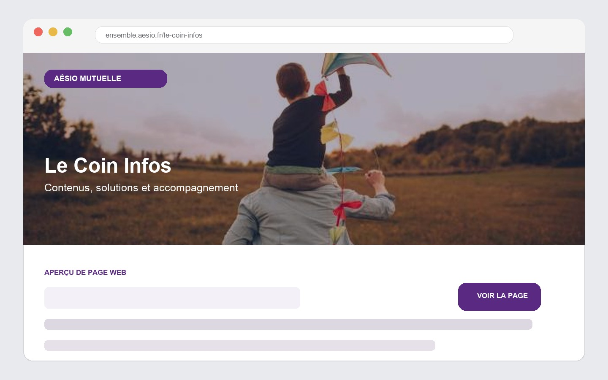
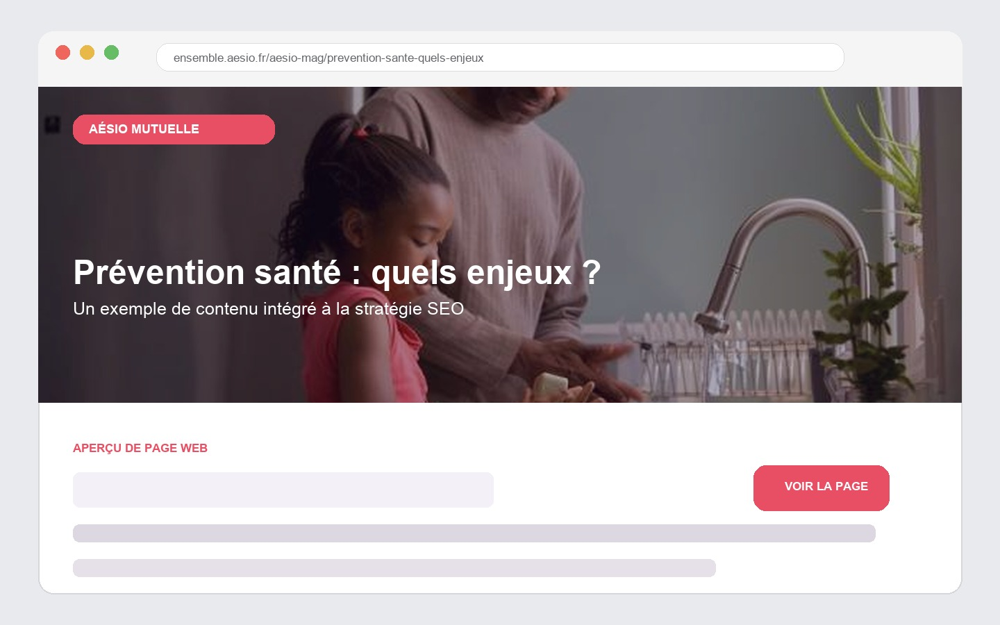

Chamrousse Tourist Office & AÉSIO Mutuelle Office de Tourisme de Chamrousse & AÉSIO mutuelle
Web Project Management
Website management, page redesign, content administration and SEO projects carried out for Chamrousse Tourist Office and AÉSIO Mutuelle. Gestion de site, refonte de pages, administration de contenus et projets SEO menés pour l'Office de Tourisme de Chamrousse et AÉSIO mutuelle.
Page redesign and web content coordination Refonte de pages et coordination de contenus web


Dense content, limited visual hierarchy and key information that was harder to scan quickly. Un contenu dense, une hiérarchie visuelle limitée et des informations importantes plus difficiles à repérer rapidement.
Clearer blocks, stronger visual rhythm, highlighted practical information and a more modern event page. Des blocs plus clairs, un rythme visuel plus fort, des informations pratiques mieux mises en avant et une page événement plus moderne.
ResultsRésultats
Agora Portal / Le Coin Infos

Open the live page Ouvrir la page en ligneMy contributionMa contribution
- Content writing and weekly page managementRédaction de contenus et administration hebdomadaire de la page
- Layout work with the project manager and UX designerTravail de mise en page avec le chef de projet et l'UX designer
- Internal newsletters, social media and video-conference presentationsNewsletters internes, réseaux sociaux et présentations en visioconférence
ResultsStatistiques
SEO and prevention content structure SEO et structure éditoriale dédiée à la prévention

Open the SEO article Ouvrir l'article SEO